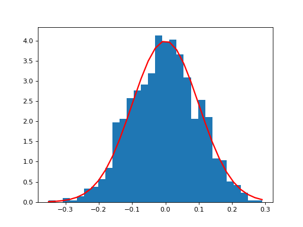
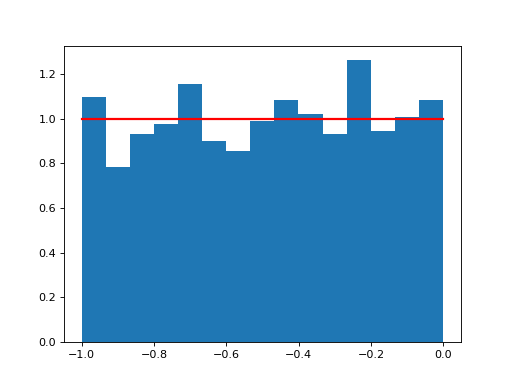

-
cosmic.sample.cmc.elson.M_enclosed(r, gamma, rho_0)¶ Compute the mass enclosed in an Elson profile at radius r with slope gamma, central concentration rho_0, and assumed scale factor a = 1
In practice, this is only used to sample the positions of stars, so rho_0 is just picked to normalize the distribution (i.e. rho_0 s.t. M_enclosed(rmax) = 1)
-
cosmic.sample.cmc.elson.draw_vr_vt_r(N=100000, r_max=300, gamma=4)¶ Draw random velocities and positions from the Elson profile.
N = number of stars r_max = maximum number of virial radii for the farthest star gamma = steepness function of the profile
Note that gamma=4 is the Plummer profile
returns (vr,vt,r) in G=M_cluster=1 units
-
cosmic.sample.cmc.elson.find_rmax_vir(r_max, gamma)¶ This is a little tricky: because the virial radius of the Elson profile depends on the maximum radius, if the profile is very flat (e.g. gamma~2) then you need a large maximum radius to get a large number of virial radius in there. This basically finds r such that r / rVir(r) = r_max. In other word, how far out do we need to go to have r_max number of virial radii in the sample.
-
cosmic.sample.cmc.elson.find_sigma_sqr(r, r_max_cluster, gamma)¶ Find the 1D velocity dispersion at a given radius r using one of the spherial Jeans equations (and assuming velocity is isotropic)
-
cosmic.sample.cmc.elson.get_positions(N, r_max_cluster, gamma)¶ This one’s easy: the mass enclosed function is just the CDF of the mass density, so just invert that, and you’ve got positions.
-
cosmic.sample.cmc.elson.get_velocities(r, r_max_cluster, gamma)¶ Uses the spherical Jeans functions to sample the velocity dispersion for the cluster at different radii, then draws a random, isotropic velocity for each star
returns (vr,vt) with same length as r
-
cosmic.sample.cmc.elson.normal(loc=0.0, scale=1.0, size=None)¶ Draw random samples from a normal (Gaussian) distribution.
The probability density function of the normal distribution, first derived by De Moivre and 200 years later by both Gauss and Laplace independently [2], is often called the bell curve because of its characteristic shape (see the example below).
The normal distributions occurs often in nature. For example, it describes the commonly occurring distribution of samples influenced by a large number of tiny, random disturbances, each with its own unique distribution [2].
Note
New code should use the
normalmethod of adefault_rng()instance instead; see random-quick-start.- Parameters
loc : float or array_like of floats
Mean (“centre”) of the distribution.
scale : float or array_like of floats
Standard deviation (spread or “width”) of the distribution. Must be non-negative.
size : int or tuple of ints, optional
Output shape. If the given shape is, e.g.,
(m, n, k), thenm * n * ksamples are drawn. If size isNone(default), a single value is returned iflocandscaleare both scalars. Otherwise,np.broadcast(loc, scale).sizesamples are drawn.- Returns
out : ndarray or scalar
Drawn samples from the parameterized normal distribution.
See also
scipy.stats.normprobability density function, distribution or cumulative density function, etc.
Generator.normalwhich should be used for new code.
Notes
The probability density for the Gaussian distribution is
p(x) = \frac{1}{\sqrt{ 2 \pi \sigma^2 }} e^{ - \frac{ (x - \mu)^2 } {2 \sigma^2} },
where \mu is the mean and \sigma the standard deviation. The square of the standard deviation, \sigma^2, is called the variance.
The function has its peak at the mean, and its “spread” increases with the standard deviation (the function reaches 0.607 times its maximum at x + \sigma and x - \sigma [2]). This implies that normal is more likely to return samples lying close to the mean, rather than those far away.
References
- 1
Wikipedia, “Normal distribution”, https://en.wikipedia.org/wiki/Normal_distribution
- 2(1,2,3)
P. R. Peebles Jr., “Central Limit Theorem” in “Probability, Random Variables and Random Signal Principles”, 4th ed., 2001, pp. 51, 51, 125.
Examples
(Source code, png, hires.png, pdf)

{kind=link}
{kind=link}
-
cosmic.sample.cmc.elson.rho_r(r, gamma, rho_0)¶ Compute the density of the Elson profile at radius r Best to use the same normalized rho_0 from M_enclosed
-
cosmic.sample.cmc.elson.uniform(low=0.0, high=1.0, size=None)¶ Draw samples from a uniform distribution.
Samples are uniformly distributed over the half-open interval
[low, high)(includes low, but excludes high). In other words, any value within the given interval is equally likely to be drawn by uniform.Note
New code should use the
uniformmethod of adefault_rng()instance instead; see random-quick-start.- Parameters
low : float or array_like of floats, optional
Lower boundary of the output interval. All values generated will be greater than or equal to low. The default value is 0.
high : float or array_like of floats
Upper boundary of the output interval. All values generated will be less than high. The default value is 1.0.
size : int or tuple of ints, optional
Output shape. If the given shape is, e.g.,
(m, n, k), thenm * n * ksamples are drawn. If size isNone(default), a single value is returned iflowandhighare both scalars. Otherwise,np.broadcast(low, high).sizesamples are drawn.- Returns
out : ndarray or scalar
Drawn samples from the parameterized uniform distribution.
See also
randintDiscrete uniform distribution, yielding integers.
random_integersDiscrete uniform distribution over the closed interval
[low, high].random_sampleFloats uniformly distributed over
[0, 1).randomAlias for random_sample.
randConvenience function that accepts dimensions as input, e.g.,
rand(2,2)would generate a 2-by-2 array of floats, uniformly distributed over[0, 1).Generator.uniformwhich should be used for new code.
Notes
The probability density function of the uniform distribution is
p(x) = \frac{1}{b - a}
anywhere within the interval
[a, b), and zero elsewhere.When
high==low, values oflowwill be returned. Ifhigh<low, the results are officially undefined and may eventually raise an error, i.e. do not rely on this function to behave when passed arguments satisfying that inequality condition.Examples
(Source code, png, hires.png, pdf)

{kind=link}
{kind=link}
-
cosmic.sample.cmc.elson.virial_radius_analytic(gamma, r_max)¶ Virial radius is best calculated directly, since rmax may be pretty far from infinity. Directly integrate 4*pi*r*rho*m_enclosed from 0 to rMax to get the binding energy, then just divide 0.5 by that.